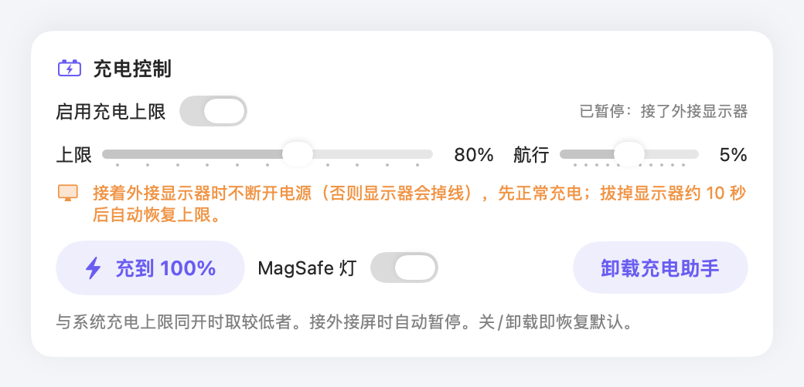
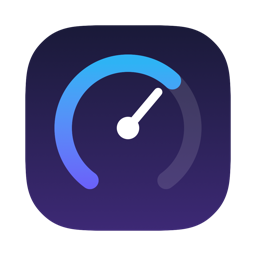
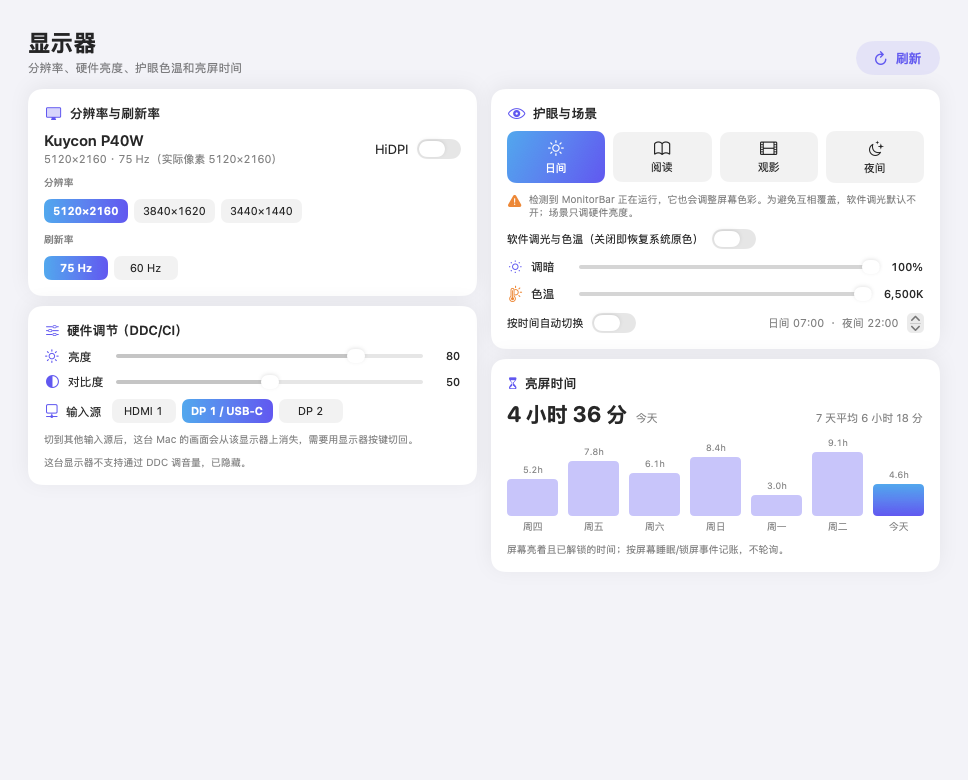
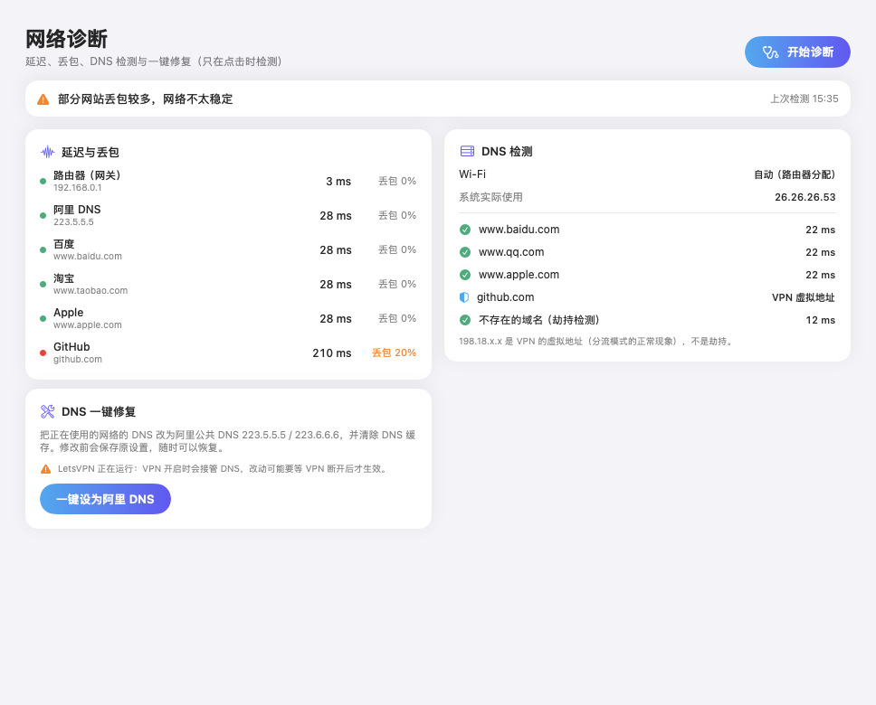
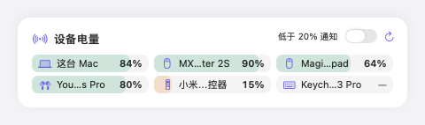

电池 · 充电
充电上限，养护电池
装一次后台充电助手，就能把电量停在 50–100% 之间的上限，并设置 0–10% 的航行范围，避免反复小幅充电。接外接显示器时自动暂停，不会让屏幕掉线。


Mac 一键优化外接大屏、多开 AI 工具和浏览器时，Mac 突然卡顿却查不出原因？一键体检，找出元凶，当场解决。
如果你和我一样，平时用 MacBook Pro 外接显示器，同时开着一堆 AI 工具、软件和浏览器窗口——那你大概也遇到过：电脑突然变卡，鼠标和键盘都不跟手了。
窗口拖动开始掉帧，键盘输入有延迟，但风扇不转、机身不烫，看起来一点也不像"过热降频"。
没有哪个软件特别占 CPU 或内存，也没有程序卡死。按理说，这台 Mac 应该运行得好好的。
开着的窗口、跑着的任务、手头的工作状态，全都得重来。这是最省事的办法，也是最贵的。
所以我想：有没有办法不重启，也能把问题解决掉？于是 vibe 出了这个小工具。
不是又一个"清理垃圾"的工具。它检查的正是活动监视器看不到的东西：卡住的 Spotlight 索引、互相抢网络的 VPN、开太多的浏览器、后台偷偷跑虚拟机的 AI 应用。
点一下，扫描系统状态，给出 0–100 的健康分。
列出每一个可以处理的问题，以及它占用了多少。修哪个，你说了算。
一键执行，当场见效——不用关窗口，也不用重启。
从卡顿排查到日常状态监控，九件小事，都收在一个约 2 MB 的 App 里。
CPU 负载、可用内存、连续运行天数，每 5 秒自动刷新。跑得太久、内存紧张，一眼就知道。
两个 VPN 同时运行会互相抢网络，Claude 等 AI 应用会在后台跑虚拟机。它把这些都找出来，占了多少写得清清楚楚，退不退由你决定。
5K 带鱼屏加上 Liquid Glass 效果，渲染压力不小。它按你的系统版本，直接打开对应设置页。
菜单栏常驻一个小指标，点开就是完整面板：CPU/GPU 占用和温度、内存压力、磁盘、网速、风扇、电池与外设电量。还有常亮、擦屏、截图、麦克风静音等快捷开关。
健康度、循环次数、温度、状况一目了然；任意百分比的低电量提醒，每种可配提示音；记录每个应用 24 小时 / 7 天 / 30 天耗电。
把电量停在 50–100% 之间的上限，配合 0–10% 的航行范围，避免反复小幅充电；接外接显示器时自动暂停。
支持 DDC/CI 时直接调硬件亮度、对比度和输入源；日间/阅读/观影/夜间四种场景，一键切分辨率与 HiDPI。
一键测延迟与丢包，检查 DNS 解析耗时，并用不存在的域名检测运营商劫持；一键切阿里公共 DNS 并清缓存。
鼠标、键盘、耳机、遥控器的电量集中显示：系统电量、AirPods 左右耳与充电盒，以及罗技 MX 等标准 BLE 电量服务。
下面是应用里真实的界面，不是设计稿。
装一次后台充电助手，就能把电量停在 50–100% 之间的上限，并设置 0–10% 的航行范围，避免反复小幅充电。接外接显示器时自动暂停，不会让屏幕掉线。

外接显示器支持 DDC/CI 时，直接调硬件亮度、对比度和输入源。四种场景可按时间自动切换，软件调光默认关闭，检测到 MonitorBar 等工具时不抢着改屏幕色彩。

点一下测试路由器、阿里 DNS 和常用网站的延迟与丢包，用不存在的域名检测运营商劫持。原设置自动保存，随时可以恢复。

鼠标、键盘、耳机、遥控器的电量集中显示，读不到的设备会写明原因。每 5 分钟刷新一次，不持续扫描。

它只做必要的事，每一步都在你的掌控之中。没有"一键加速"的黑箱，也没有你看不见的后台常驻。
每一项操作都要你自己选、自己点。
只是退出程序，或重启会自动恢复的系统服务。
不装后台常驻服务，也不改系统文件。
所有代码都在 GitHub 上，随时可以查看。
没有安装器、没有后台服务，拖进「应用程序」就能用。
xattr -dr com.apple.quarantine "/Applications/Mac一键优化.app"